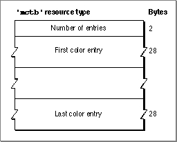
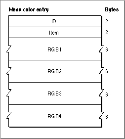

The Menu Color Information Table Resource
To use colors other than the default colors in a menu, provide a menu color information table ('mctb') resource with the same resource ID as its corresponding'MENU'resource. You can also choose to provide an'mctb'resource with resource ID 0 to define colors for all your menus and your menu bar. Note that you should usually use the default colors provided by the Menu Manager.The Menu Manager stores color information about your application's menus and menu bar in a menu color information table. If you provide an
'mctb'resource with resource ID 0, the Menu Manager reads the resource in when your application callsInitMenusand stores the information in your application's menu color information table. If you provide an'mctb'resource with the same resource ID as a'MENU'resource, when you useGetMenuto read in the resource description of the menu (orGetNewMBarto read
in all menus in the menu bar), the Menu Manager also reads in any associated'mctb'resource (if it exists). "The Menu Color Information Table Record" beginning on page 3-100 describes the format of the menu color information table.Figure 3-40 shows the format of a compiled
'mctb'resource.Figure 3-40 Structure of a compiled menu color information table
('mctb') resource
A compiled version of an
'mctb'resource contains the following elements:A color entry defines colors for various parts of the menu and menu bar. Figure 3-41 on the next page shows the format of a compiled menu color entry in an
- a count of the number of menu color entry descriptions
- a variable number of menu color entries
'mctb'resource.Each menu color entry in an
'mctb'resource contains the following:Figure 3-41 Structure of a menu color entry in an
- A menu ID to indicate that this entry is either a menu item entry or menu title entry, 0 to indicate that this entry is a menu bar entry, or -99 to indicate that this is the last entry in this resource.
- An item number to indicate that this entry is a menu item entry, or 0 to indicate that this is either a menu title or menu bar entry. Together, the menu ID and menu item determine how the type of menu color entry is described. See Table 3-7 on page 3-102 for a complete description of how the menu ID and menu item specifications define the type of menu color entry.
- RGB1: for a menu bar entry, the default color for menu titles; for a menu title entry, the title color of a specific menu; for a menu item entry, the mark color for a specific item.
- RGB2: for a menu bar entry, the default background color of a displayed menu; for a menu title entry, the default color for the menu bar; for a menu item entry, the color for the text of a specific item.
'mctb'resource
- RGB3: for a menu bar entry, the default color of items in a displayed menu; for a menu title entry, the default color for items in a specific menu; for a menu item entry, the color for the keyboard equivalent of a specific item.
- RGB4: for a menu bar entry, the default color of the menu bar; for a menu title entry, the background color of a specific menu; for a menu item entry, the background color of a specific menu.